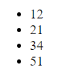

Задача 1.
Вивести з використанням циклів маркований список з випадковими числами (1-100). Кількість випадкових чисел вводиться користувачем. Приклад:
Задача 2.
Створити 10 елементів для введення цін продуктів
Задача 3.
Вивести таблицю з одним рядком і 7 стовпцями
Задача 4.
Вивести таблицю з 3 рядків і 7 стовпців
Вивести таблицю
Задача 6.
Вивести 3 таблиці (по 3 рядки і 3 стовпці у кожній) за зразком
Задача 7
Вивести на екран N абзаців (N вводиться користувачем) за зразком:
Задача 8.
Користувач загадує число. За 3 спроби комп’ютер намагається вгадати число користувача (використати confirm).
Задача 9
Користувач загадує число. Комп’ютер задає питання поки не вгадає число користувача (використати confirm).
Задача 10. Знайти суму всіх непарних чисел, що знаходяться між заданими користувачем числами.
Задача 11
Знайти суму 5 непарних чисел, що знаходяться між заданими користувачем числами
Задача 12.
Ігровий автомат. Випадково вибираємо зображення у 3 позиціях. Вибір у кожній позиції вибирається як одне з чотирьох зображень. Вивести ці зображення і повідомити виграш користувача (три перших зображення 100 грн, три других – 200, три третіх – 500, три четвертих зображення – 1000грн). Використати цикли і switch (для вибору зображення за номером).
13. Морський бій.
Комп’ютер випадково розташовує одиночний корабель на полі розміром N*M. Маючи К снарядів користувач намагається потопити корабель.
14. Каса.
Користувачу повідомляють суму, яку йому треба сплатити. Користувач поступово вводить суму грошей до тих пір, поки суми не буде достатньо для оплати товарів (кожного разу користувачу повідомляють, яку ще суму потрібно ввести).
Задача 15.
Користувача поступово вводить показники температури протягом року. Знайти середню температуру.
Задача 16.
Користувач поступово вводить прибуток магазину за кожен день протягом N тижнів. Знайти загальну величину прибутку та вивести величину прибутку протягом кожного окремого тижня.